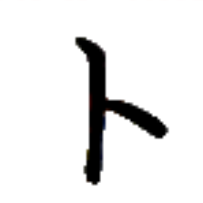
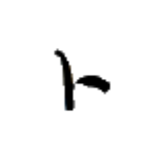
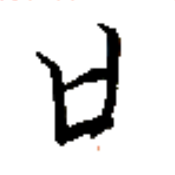
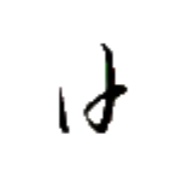
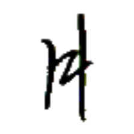
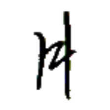
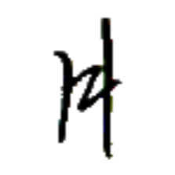

キュー→
【右】
[連体詞]
右の
[名詞]
右
右手
キュー→ホㇷ゚→
【右手】
[名詞]
右手

トウ⤴
【樽】
[名詞]
容器、樽
金樽
キン⤴トウ⤴
【金樽】
[名詞]
金属缶
我心善口金樽之口物
パイ⤴ヒアー→カイㇳ·ヤㇺ→キン⤴トウ⤴ア·ヤㇺ→ク·
【我心善口金樽之口物】
私は缶詰食品が好きだ。
開樽
ナㇺ⤴トウ⤴
【開樽】
[名詞]
ニーンセッカイクのゲームルールのひとつ
足錘貧樽
シー→ショウ⤴ヘイ⤴トウ⤴
【足錘貧樽】
[名詞]
人によって何画で書くか差があるような字のこと。
ダウㇳ→
【深】
[状態動詞]
深い

ボン⤴
【筒】
[名詞]
筒、管、パイプ
水筒
ヌアー⤴ボン⤴
【水筒】
[名詞]
水道管
水筒在失生水
ヌアー⤴ボン⤴アイㇺ⤴チㇷ゚→ヤン→ヌアー⤴
【水筒在失生水】
水道管が水漏れしている。


 
